Project 4: Neural Radiance Field
Overview
In this project, I implement a Neural Radiance Field (NeRF) pipeline — from camera calibration and dataset prep to ray generation, volumetric sampling, a neural radiance MLP, and volume rendering. I start by building a small neural field for 2D images, then extend to multi-view 3D reconstruction and novel-view synthesis with my own captures.
Part 0: Calibrating Your Camera and Capturing a 3D Scan
Part 0.1: Calibrating Your Camera
I captured 50 views of a 4×4 ArUco tag and used them to estimate the camera’s intrinsic parameters—focal length, principal point, and distortion coefficients.
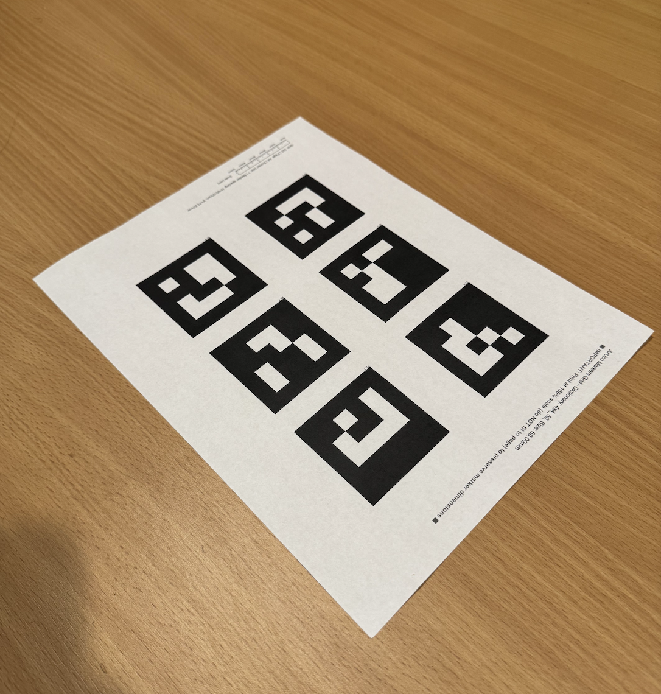
Part 0.2: Capturing a 3D Object Scan
I then photographed the object from 40 different angles with the tag visible to establish geometric reference points.
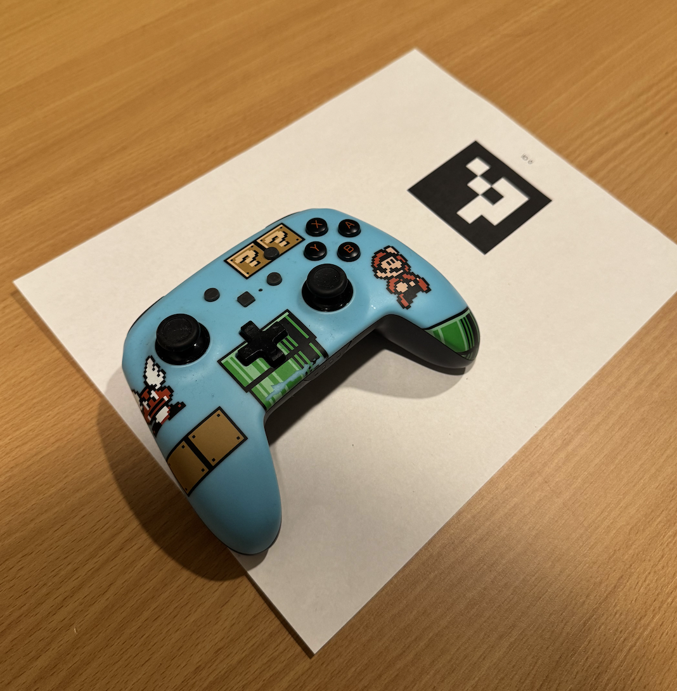
Part 0.3: Estimating Camera Pose
Next, we estimated each camera’s position and orientation using PnP (Perspective-n-Point) and visualized the resulting camera frustums in 3D with Viser.
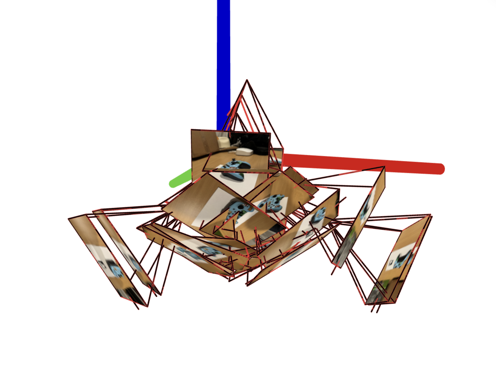
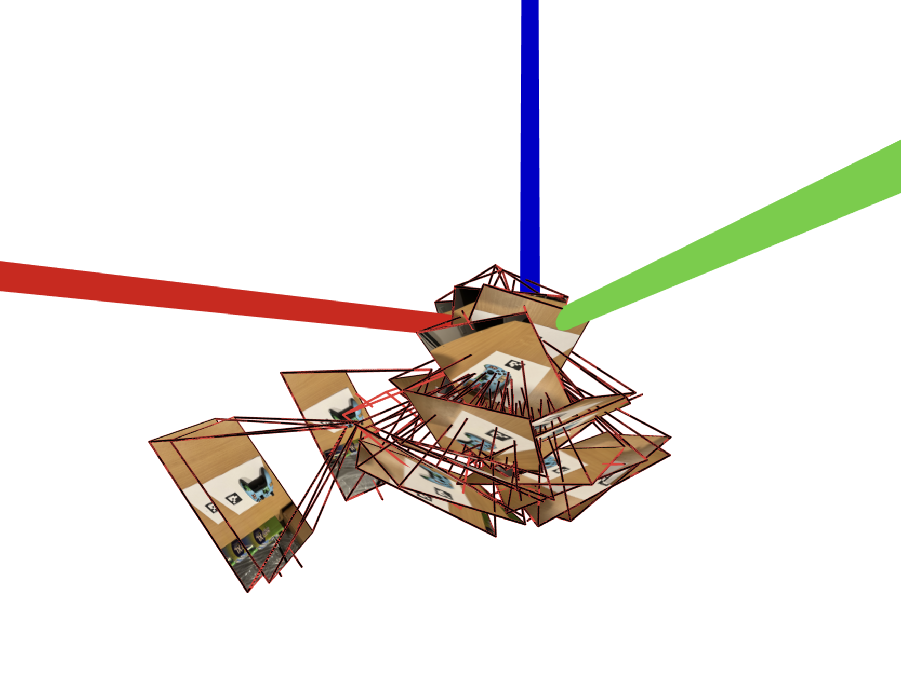
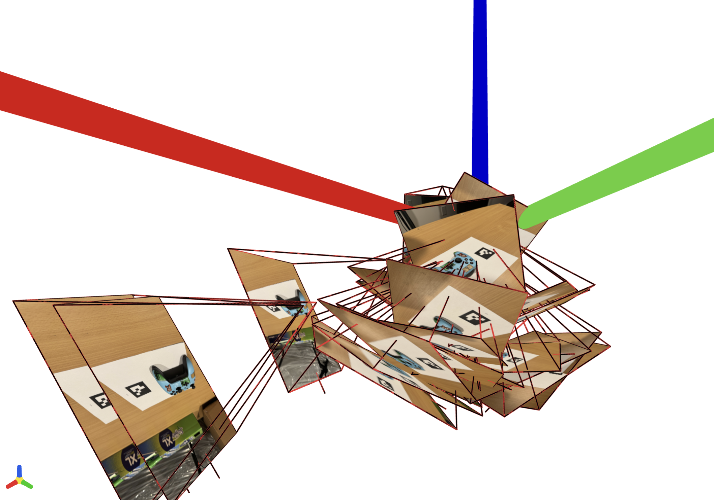
Part 0.4: Undistorting Images and Creating a Dataset
Finally, we undistorted all images and compiled the calibrated intrinsics, camera-to-world poses, and processed views into a dataset ready for NeRF training.
Part 1: Fit a Neural Field to a 2D Image
In part 1, we implemented a neural field — a coordinate-based multilayer perceptron (MLP) that learns to represent an image as a continuous function. Given only 2D pixel coordinates (x,y) normalized to [0,1], the network predicts RGB color values (r,g,b), effectively learning to “paint” the image from scratch. During training, it gradually reconstructs fine details via gradient-based optimization.
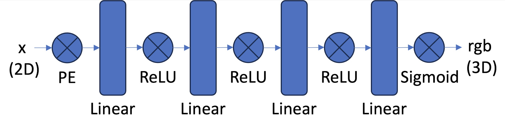
Our default architecture uses 3 hidden layers, each with 128 neurons, and a maximum PE frequency of L = 10. Training ran for 3,000 iterations with a batch size of 10,000 random pixels per step.

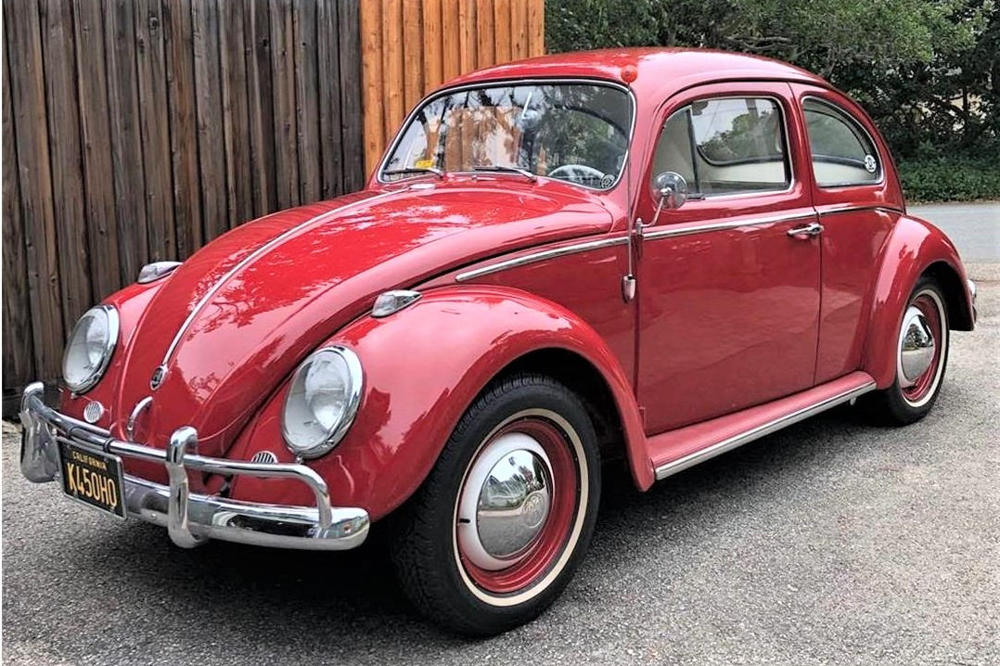
We saved reconstructions at iterations 0, 500, 1000, 1500, 2000, 2500, and 3000 to visualize progression. The model quickly captured coarse colors and shapes, then refined textures and edges, converging to a near-perfect reconstruction around 2,500 iterations. We observed similar behavior on both the provided test image and a custom image, confirming the method’s generality.
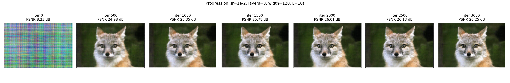
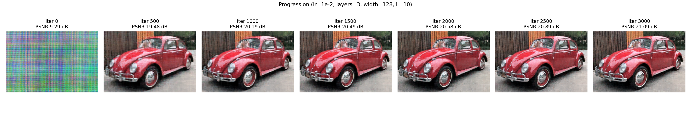
To study the effect of model capacity and frequency encoding, we trained four variants:
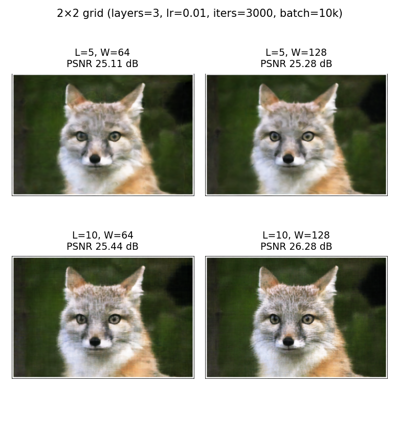
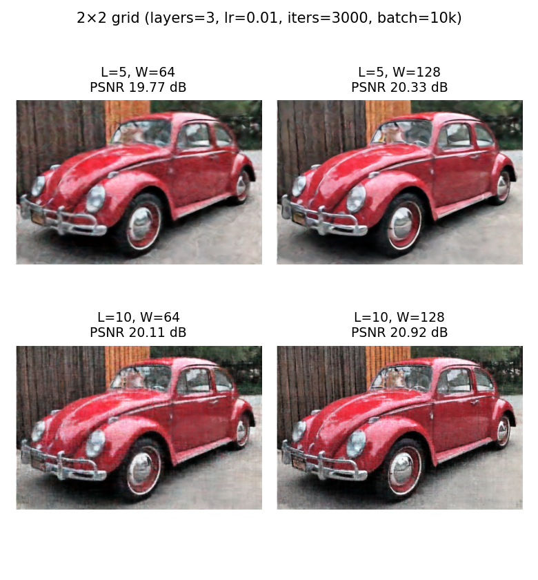
The 2×2 grid of our final results showed that increasing the PE frequency L enhances sharpness and fine detail, but can introduce high-frequency artifacts. Wider models generally achieved higher fidelity, though improvements diminished beyond 256 neurons. These patterns highlight how positional encoding and width jointly control the balance between smoothness, realism, and overfitting.
We also tracked the Peak Signal-to-Noise Ratio (PSNR) throughout training for the default setup. The PSNR increased steeply over the first 1,000 iterations, reaching 20+ dB as the model converged. The curve closely matched the visual progression—rapid improvement in the first 1,000 iterations, then gradual refinement toward convergence.
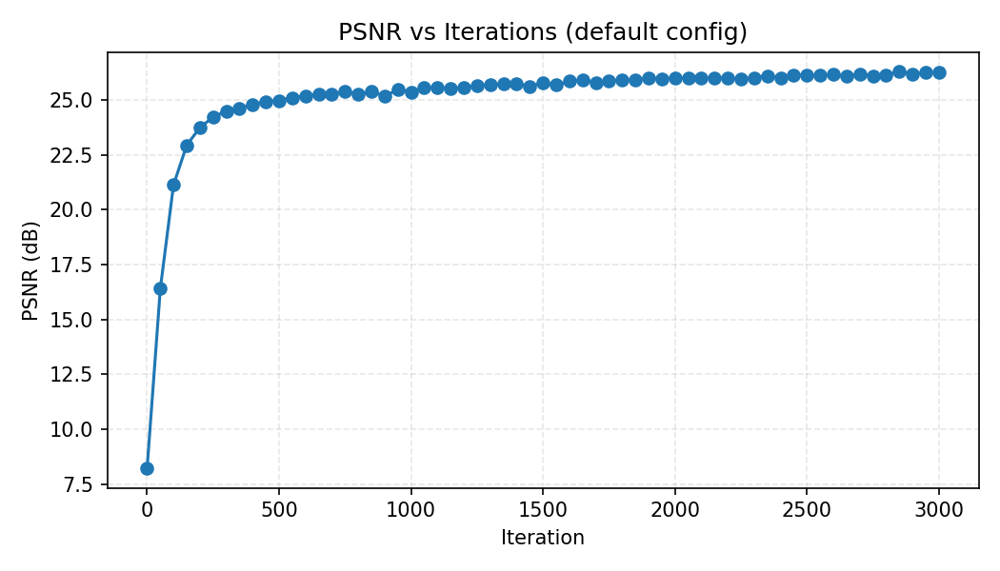
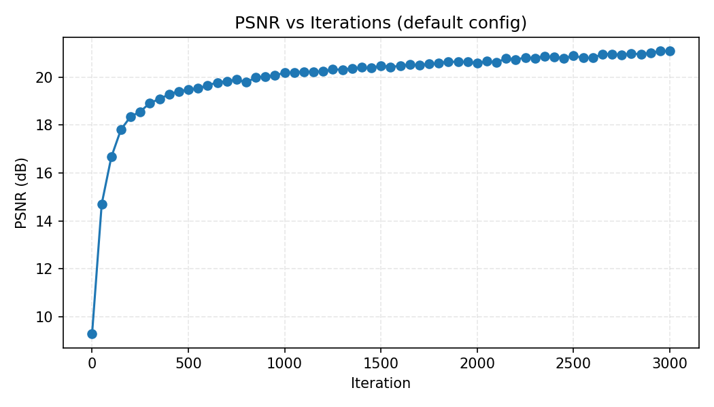
Part 2: Fit a Neural Radiance Field from Multi-view Images
Part 2.1: Create Rays from Cameras
In this part, I implemented a function to generate rays for every pixel across all camera views. Using the camera intrinsics 𝐾 (focal lengths and optical center) and extrinsics (rotation 𝑅 and translation 𝑡), I converted 2D pixel coordinates into 3D ray directions. First, I created a pixel grid for each image using torch.meshgrid, and normalized it using the intrinsic matrix. I then applied the camera-to-world transformation to rotate and translate each direction vector into world coordinates. Each ray was represented as a pair: its origin (camera center) and unit direction (ray through the pixel). This established the fundamental link between each pixel and its corresponding 3D sampling direction through the scene.
Part 2.2: Sampling
Next, I sampled discrete 3D points along each ray to approximate the continuous volume. For each ray, I defined near and far bounds (the closest and farthest distances along the ray that intersect the scene). I then sampled 𝑁 depth values t_𝑖 between these bounds, both uniformly and with stratified random jitter for anti-aliasing and better coverage. Each sample position was computed as: x_𝑖 = o + t_𝑖. This produced batches of 3D sample points that could be fed into the NeRF network for color and density evaluation.
Part 2.3: Putting the Dataloading All Together
Here, I integrated the previous steps into a PyTorch dataloader to streamline training. The dataloader loaded all camera poses and corresponding images. For each batch, it randomly selected a subset of images and pixels, generated their rays (Part 2.1), and sampled points along them (Part 2.2). Each batch returned: ray origins and directions, sampled 3D points, and ground-truth RGB values for each pixel. This made the NeRF training loop modular and efficient, automatically handling randomization and GPU batching.
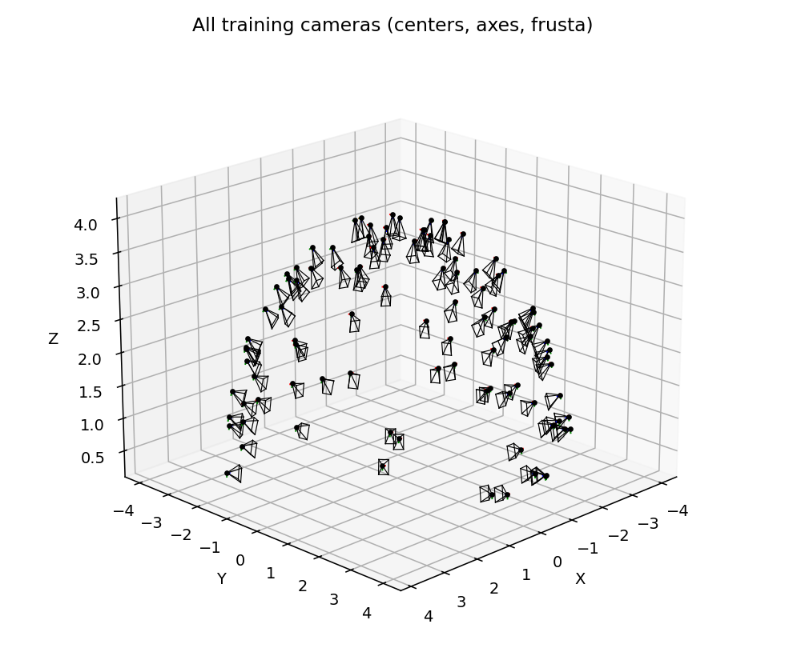
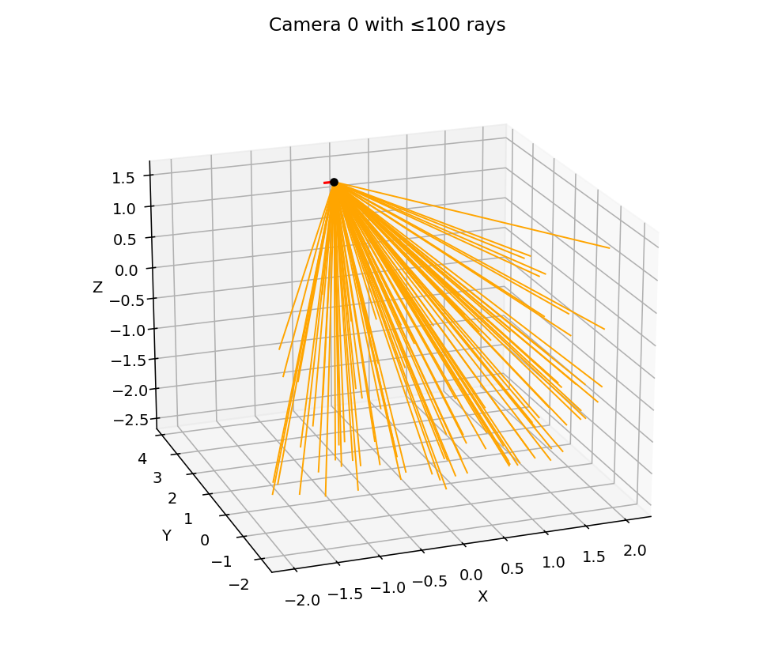
Part 2.4: Neural Radiance Field
I implemented the NeRF model as a multilayer perceptron that maps 3D positions and viewing directions to color (RGB) and density (σ). The input coordinates are first passed through a positional encoding layer to capture high-frequency spatial variations. The network is trained by minimizing the MSE loss between the rendered and real images, learning a continuous volumetric representation of the scene that can reproduce photorealistic views from unseen angles.

Part 2.5: Volume Rendering
Finally, I integrated a differentiable volume rendering step to synthesize 2D images from the predicted color and density fields. For each ray, accumulated transmittance and emission are computed using exponential attenuation, producing the final pixel color through weighted integration along the ray. This allows gradients to flow through the entire rendering process, enabling end-to-end optimization of the NeRF to reconstruct the 3D LEGO scene accurately.
I tracked the progression of our reconstruction for over 3000 iterations, and after 3472 s (approx 1 hr) of continuous training and validation, we successfully achieved a desired PSNR of over 23dB.
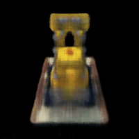
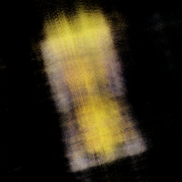
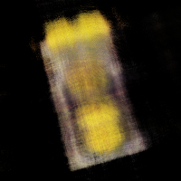
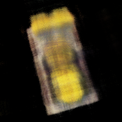
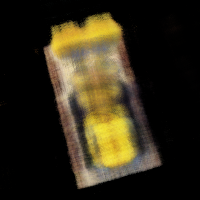
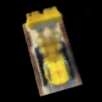
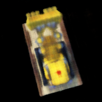
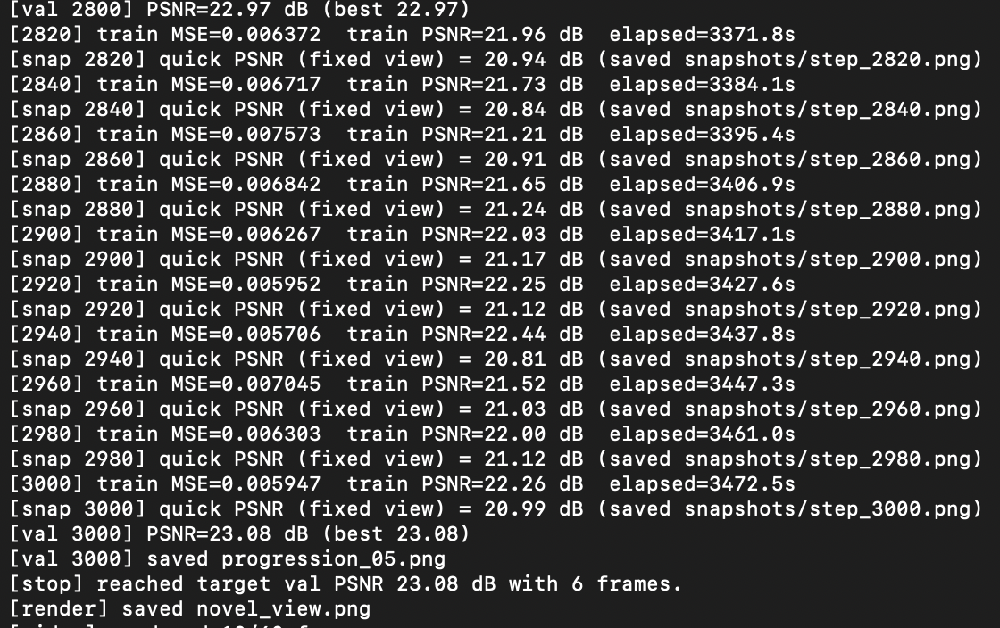
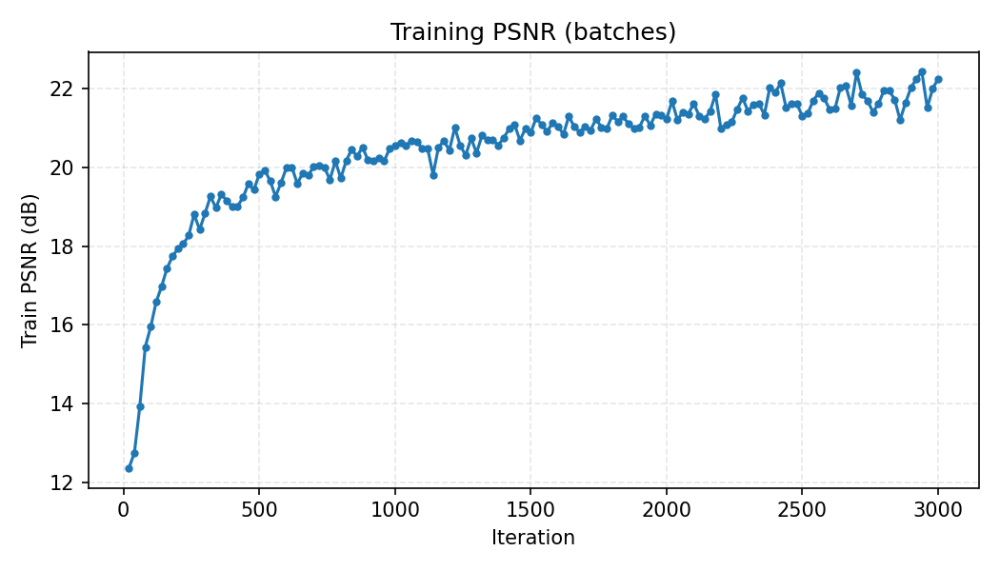
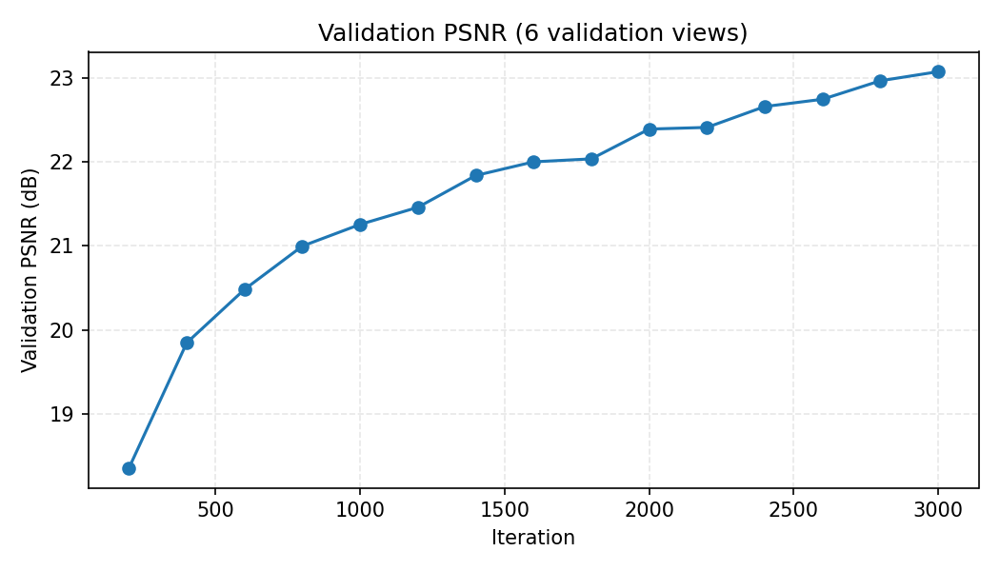
Part 2.6: Training with Your Own Data
Finally, I train on my captured dataset, monitor PSNR/SSIM, and render a camera fly-through of our scene.
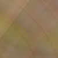
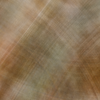
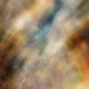
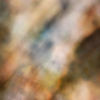
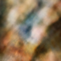
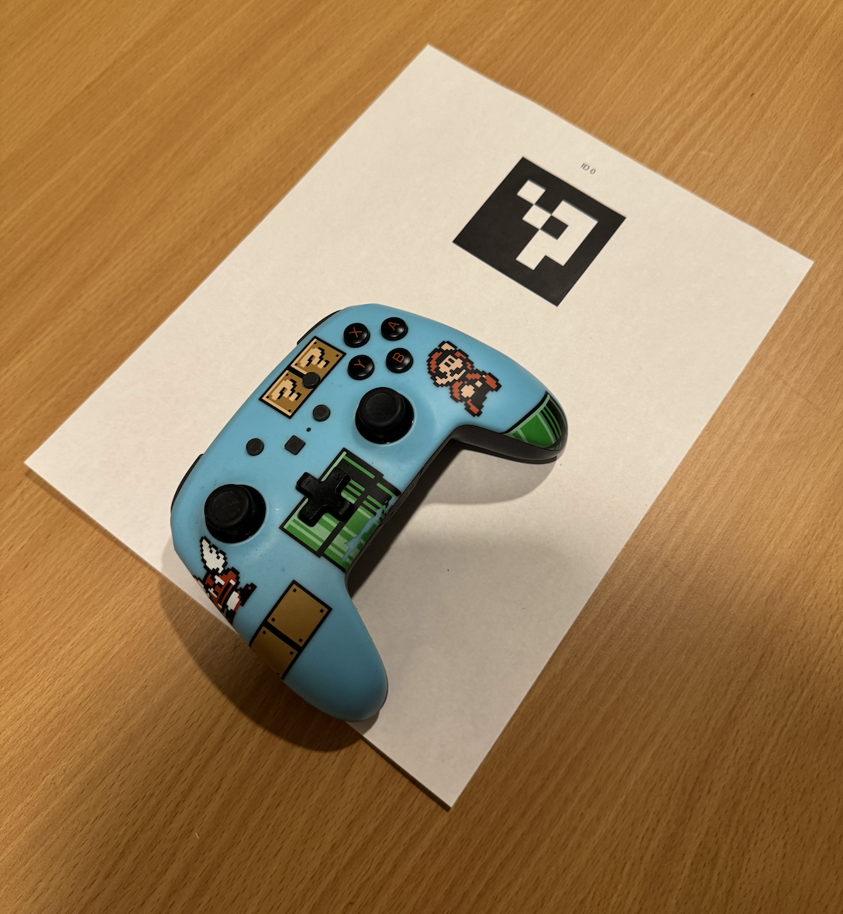
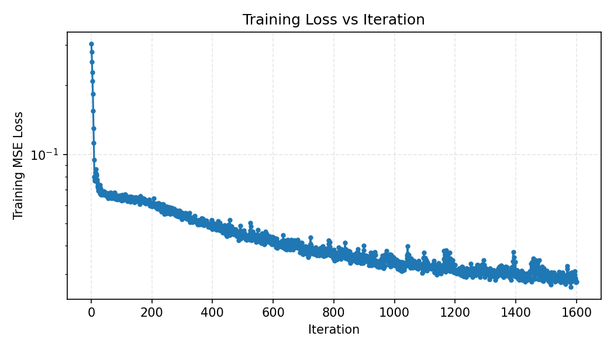
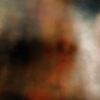